I do not make clean objects. I make convincing hauntings. My work begins where ordinary presentation fails—when memory stutters, when color behaves like evidence, when sound becomes structure, when love arrives damaged and still insists on being seen.